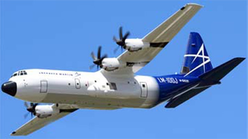

LM-100J Super Hercules

- Разработчик: Lockheed Martin
- Страна: США
- Первый полет: 2017
- Тип: Среднемагистральный грузопассажирский самолет
LM-100J Super Hercules — это американский военно-транспортный самолёт, разработанный компанией Lockheed Martin. Он является модификацией самолёта C-130 Hercules и предназначен для выполнения различных задач, включая перевозку грузов, десантирование войск и эвакуацию раненых.
| Летно технические характеристики | |
|---|---|
| Модификация | LM-100J |
| Размах крыла максимальный, м | 40.38 |
| Длина, м | 34.37 |
| Высота, м | 11.81 |
| Площадь крыла, м2 | 162.20 |
| Масса, кг | |
| - пустого самолета | 36650 |
| - максимальная взлетная | 74389 |
| Тип двигателя | 4 ТВД Rolls-Royce AE2100D3 |
| Мощность, э.л.с. | 4 х 4591 |
| крейсерская скорость, км/ч | 660 |
| Практическая дальность с 1300 кг груза, км | 4540 |
| Практический потолок, м | 9300 |
| Экипаж, чел | 2 |
| Полезная нагрузка: | Максимально - 21863 кг, обычно - 18200 кг груза |